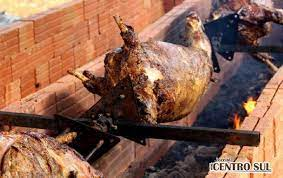

O mirante do monumento em homenagem a Nossa Senhora das Graças é um dos pontos turísticos mais visitados no município. A estátua, com 22 metros de altura, é uma das maiores dedicada à Nossa Senhora das Graças. Começou a ser construída em 1957, em comemoração ao aniversário de 50 anos do município. Nos dias festivos e especiais do calendário católico a capela recebe celebrações, missas e novenas. Além da capela e do mirante, o espaço possui estacionamento, uma escadaria de acesso e um bosque.
Gastronomia e prato típico
O prato típico do município é o borrego no rolete, que é temperado e assado no fogo.O prato consiste na carne de ovino até doze meses de vida e é servido acompanhado com arroz e saladas, principalmente na Festa do Borrego no Rolete.
A gastronomia local é diversificada, recebendo influência de vários imigrantes como eslavos, alemães e italianos. Um dos pratos tradicionais do município é o pierogi, que é uma massa semelhante a um pastel, feita à base de farinha de trigo, água, sal e ovos. É servido em formato de meia lua, com diversos recheios, como batata com requeijão. No reduto dos descendentes de italianos ainda preservam a culinária típica, como na localidade de Pinho de Baixo. A polenta, por exemplo, é encontrada na mesa de muitas famílias e na tradicional festa da comunidade.

Outros pontos turísticos
Parque Aquático
Casa da Fazenda Floresta
A Casa da Fazenda Florestal, também chamada de Palácio do Pinho é uma mansão histórica do início do século XX, localizada no meio da Floresta Nacional de Irati, no estado do Paraná.